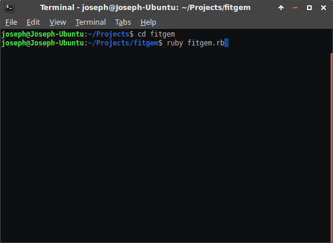
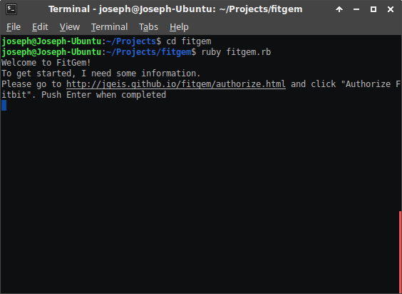
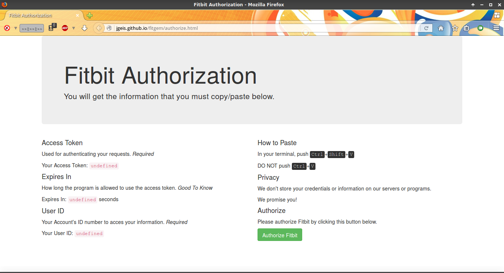
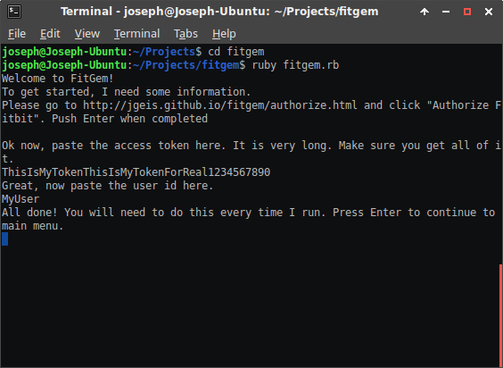

Welcome to FitGem
This is a simple to use Fitbit client. It can report your steps, floors, distance, and calories. FitGem uses an interactive system to allow the user to make choices and authenticate itself.
System Requirements / Dependencies
- Ruby
-
httpartyand its dependencies
Installation
- Install
rubyfrom your distribution.- Ubuntu
$ sudo apt-get install ruby - Debian
# apt-get install ruby -
Fedora, Red Hat, etc.
# yum install ruby -
openSUSE, SUSE
# zypper install ruby
- Ubuntu
- Clone the RubyGems repository. Run
setup.rbusingruby setup.rb. (If you do have RubyGems, skip this.) - Install HTTParty using
gem. - Clone the FitGem Repository
- Run
fitgem.rbwithruby fitgem.rb. - Run FitGem with `ruby fitgem.rb`
- Go to http://jgeis.github.io/fitgem/authorize.html. 
- Authorize, then press Enter, copy access token and user id, respectively. 
$ git clone https://github.com/rubygems/rubygems.git
# gem install httparty
$ git clone https://github.com/jgeis/fitgem.git